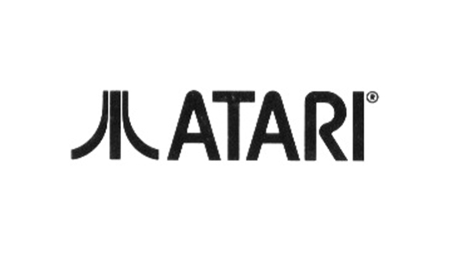
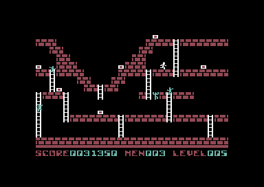
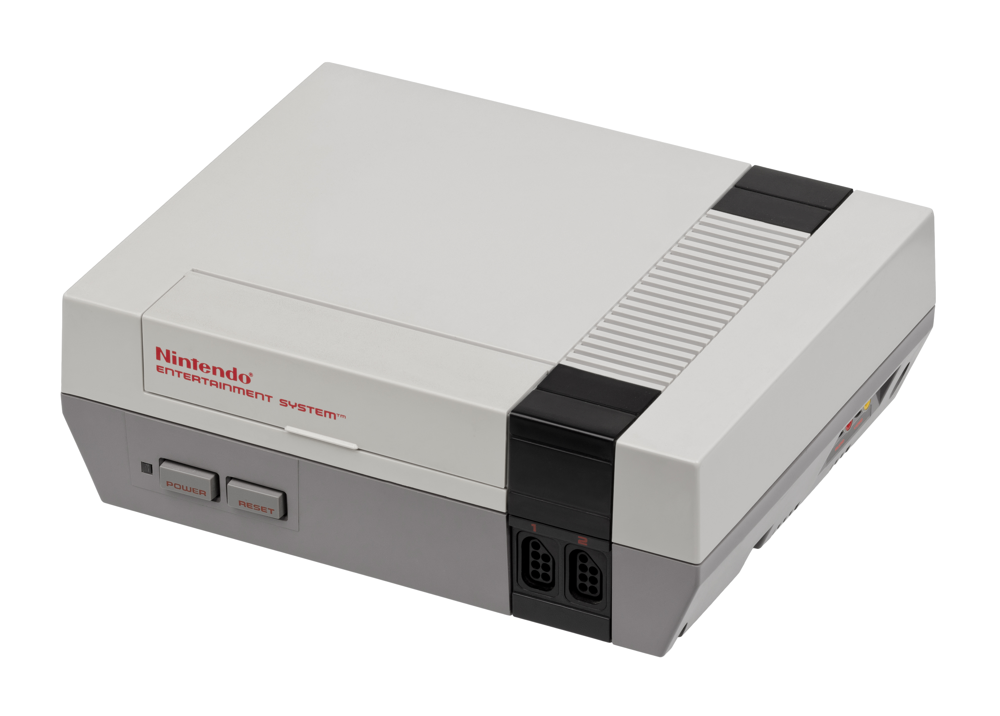
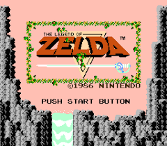

Au début des années 80, l'industrie arcade continue de se développer de façon exponentielle, avec plusieurs succès: "Space Invaders" en 1978 et "Pac-Man" en 1980. Le Krach des jeux vidéo en 1983 a eu un impact sur l'industrie émergente des jeux vidéo, principalement aux États-Unis. Atari, leader du marché mondial, subit chaque jour d'énormes pertes économiques, phénomène qui se propage de fin 1983 à début 1984, jusqu'à la sortie de Super Mario Bros. En 1985, cela a stimulé les ventes de la NES, et certaines personnes ont dit que le «krach du jeu vidéo de 1984» avait tendance à n'avoir commencé que quelques jeux en 1983. Il faut également souligner qu'il ne s'agit pas d'un «krach» au sens strict, mais d'une «crise».

Logo Atari 1972-2002
Cependant, les dégâts combinés à l’inactivité qui s’ensuivit furent tellement spectaculaires que les contemporains eurent l’impression que le jeu vidéo venait de s’écrouler.
Nintendo sort la Famicom au Japon ou Nintendo Entertainment System (NES) en Occident, la machine dominera la troisième génération de consoles de jeux vidéos.
Jusqu’au début des années 1980, les ordinateurs personnels étaient vendus uniquement dans des magasins spécialisés à un prix supérieur à 1 000 $. À partir de cette date, le marché voit l’entrée d’ordinateurs personnels bon marché pouvant se brancher sur
un téléviseur et proposant même des graphismes en couleur et du son.On retrouve au printemps 1982, le TI-99/4A était vendu 349 $, l’Atari 400 à 349 $, et le Color Computer de RadioShack à 379 $, tandis que Commodore venait juste de baisser le prix du VIC-20 à 199 $ et celui du C64 à 499 $ »
En 1982, Coleco a sorti la console ColecoVision à cartouche. Nintendo lui a donné une licence pour King Kong. Midway sortira "Pac-Man", "Namco" et "Super Pac-Man" cette année.
La même année, General Consumer Electronics a sorti la console Vectrex avec des graphiques vectoriels. Commodore vend des ordinateurs personnels Commodore 64 et utilise une stratégie de vente très agressive. Sinclair Research vend ZX Spectrum sur le marché britannique, qui est devenu un concurrent du Commodore 64 en Europe.
Commodore 64 
Gameplay de LodeRunner sur C64
Annees 1980
Au début des années 1980, les ordinateurs personnels ont commencé à être distribués à grande échelle, et il y avait une communauté de passionnés et de jeux vidéo. Les jeux vidéo s'adaptent à ce nouveau média (Apple II, ZX80, Commodore 64, Amstrad CPC, etc.). Ce sont principalement des jeux d'arcade avec des graphismes de base, qui peuvent prendre plusieurs minutes à charger à partir de la bande. À partir de 1985, l'Amiga et Atari ST seront les plus avances au sujet des jeux vidéo informatiques.
Nintendo Entertainment System (NES) est la première console de jeu japonaise lancée en Amérique du Nord. Peu à peu, elle libère le marché américain de la crise et marque le début des exportations japonaises de jeux vidéo.

Nintendo Entertainment System
"Super Mario Bros" de Shigeru Miyamoto est la killer app de la NES qui s'est vendue à 40 millions d'exemplaires et qui est le jeu le plus vendu de l'histoire depuis plus de 20 ans. Il joue un modèle dans le genre de jeu de plateforme.
The Legend of Zelda de Nintendo est le premier jeu vidéo sur console bien connu doté d’une batterie de secours sous forme de pile pour sauvegarder. Les deux premiers sont le jeu Mahjong et le RPG de Taito: Mirai Shinwa Jarvas, qui ne sortent qu'au Japon.
Nintendo a sorti "The Legend of Zelda" en même temps que Famicom Disk System (extension de Famicom) le 21 février 1986. Il n'est sorti au Japon que sous forme de disquette de Famicom Disk System sous le titre The Hyrule Fantasy. Le jeu affichera le temps de chargement lors du changement de zone ou de donjon inhérent à la plate-forme et au format de la disquette. Le système de disque Famicom dispose d'une puce supplémentaire qui peut produire un son plus riche que le NES, permettant au jeu de bénéficier d'une meilleure bande-son. De plus, l'ennemi appelé "Pols" peut être éliminé en criant dans le microphone du contrôleur Famicom.

The Legend Of Zelda
Annees 1990
Au début des années 1990, le marché des consoles de jeux était encore dominé par Nintendo et sa Famicom, plutôt que par le Master System de Sega. Mais Nintendo est toujours soutenu par les éditeurs. En 1990, les ventes de Nintendo ont explosé grâce à Super Mario Bros. 3. Ce n’est pas la seule machine qui bat des records de ventes. La sortie de la console de jeu portable Game Boy de Nintendo sera un énorme succès avec des ventes de 118 millions d’unités. Cela a grandement changé la façon de jouer. Tetris et Super Mario Land de Nintendo (35 et 14 millions d’unités, respectivement) sont les applications phares de Game Boy. Le symbole du rebond des ventes de jeux vidéo incite SNK à sortir deux versions de Neo-Geo.
Pour contrer Nintendo, Sega développe la Mega Drive, une console très puissante pour l'époque, et lui crée une mascotte, Sonic.